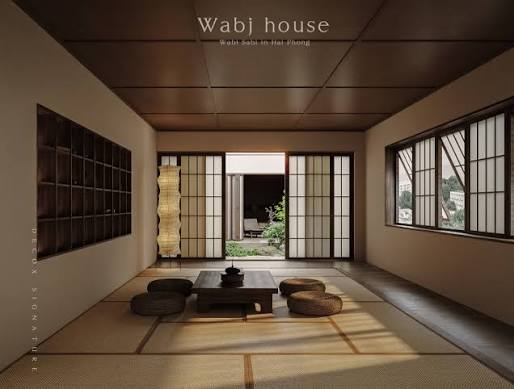
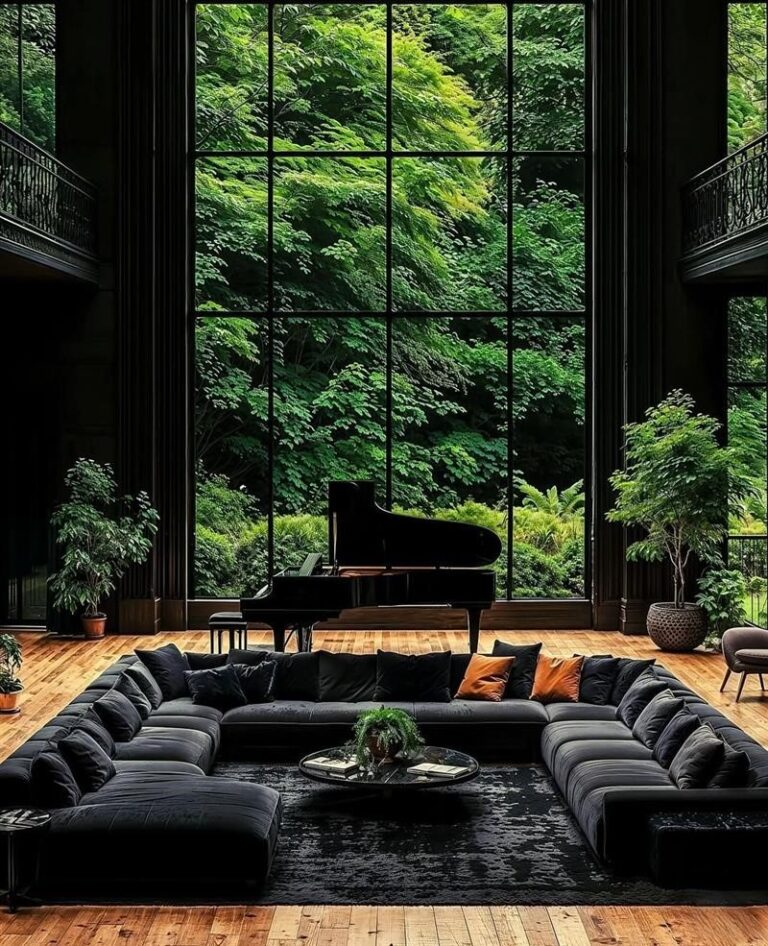
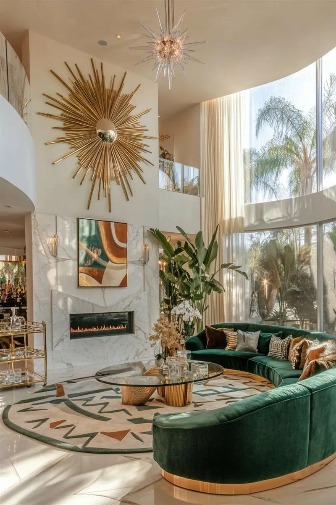

TIN MỚI NHẤT
 Thiết Kế Biệt Thự Art Deco: Đỉnh Cao Kiến Trúc Xa Hoa
Khởi nguồn từ kinh đô ánh sáng Paris vào những năm 1920, Art Deco nhanh chóng vươn lên trở thành biểu tượng toàn cầu của sự phồn vinh và thịnh vượng. Trong bối cảnh quy hoạch kiến trúc đương đại,...
Thiết Kế Biệt Thự Art Deco: Đỉnh Cao Kiến Trúc Xa Hoa
Khởi nguồn từ kinh đô ánh sáng Paris vào những năm 1920, Art Deco nhanh chóng vươn lên trở thành biểu tượng toàn cầu của sự phồn vinh và thịnh vượng. Trong bối cảnh quy hoạch kiến trúc đương đại,...

Ngày đăng: 03/03/2026Tin mớiThiết Kế Biệt Thự Art Deco: Đỉnh Cao Kiến Trúc Xa Hoa Ngày đăng: 03/03/2026Thiết kế nội thất biệt thự hiện đại chiếm được nhiều tình cảm từ phía các gia chủ
Ngày đăng: 03/03/2026Thiết kế nội thất biệt thự hiện đại chiếm được nhiều tình cảm từ phía các gia chủ
 Ngày đăng: 03/03/2026Decor không gian phòng bếp phòng ăn được theo tinh thần hiện đại, mộc mạc
Ngày đăng: 03/03/2026Decor không gian phòng bếp phòng ăn được theo tinh thần hiện đại, mộc mạc

Ngày đăng: 03/03/2026Xu Hướng Thiết Kế Nội Thất Biệt Thự Đẹp Hiện Đại Ngày đăng: 03/03/2026Tổng quan về thiết kế nội thất biệt thự và những tiêu chuẩn
Ngày đăng: 03/03/2026Tổng quan về thiết kế nội thất biệt thự và những tiêu chuẩn
TIN NỔI BẬT
Kiến Trúc Tropical: Chuẩn Mực Sống Của Giới Siêu Giàu Đông Nam ÁHệ quy chiếu về sự xa xỉ trên bản đồ bất động sản cao cấp đang trải qua một cuộc dịch chuyển sâu sắc. Thay vì rập khuôn các mô hình phương Tây xa lạ với điều kiện thổ nhưỡng,...
Phân Tích Thiết Kế Biệt Thự Phong Cách Hoàng Gia: Biểu Tượng Vị ThếĐỉnh cao của sự xa xỉ không còn được đo lường duy nhất bằng những kỳ nghỉ dưỡng đắt đỏ ở một hòn đảo biệt lập. Giới tinh hoa đang có một bước dịch chuyển tinh tế hơn.
Không Gian Home Spa: Xu Hướng Sống Wellness Đỉnh CaoĐỉnh cao của sự xa xỉ không còn được đo lường duy nhất bằng những kỳ nghỉ dưỡng đắt đỏ ở một hòn đảo biệt lập. Giới tinh hoa đang có một bước dịch chuyển tinh tế hơn.
 Phan Anh Luxury Living: Giải Mã Căn Biệt Thự “Càng Ở Càng Sướng”Đỉnh cao của sự xa xỉ không còn được đo lường duy nhất bằng những kỳ nghỉ dưỡng đắt đỏ ở một hòn đảo biệt lập. Giới tinh hoa đang có một bước dịch chuyển tinh tế hơn.
Phan Anh Luxury Living: Giải Mã Căn Biệt Thự “Càng Ở Càng Sướng”Đỉnh cao của sự xa xỉ không còn được đo lường duy nhất bằng những kỳ nghỉ dưỡng đắt đỏ ở một hòn đảo biệt lập. Giới tinh hoa đang có một bước dịch chuyển tinh tế hơn.

Thiết Kế Biệt Thự Art Deco: Đỉnh Cao Kiến Trúc Xa HoaKhởi nguồn từ kinh đô ánh sáng Paris vào những năm 1920, Art Deco nhanh chóng vươn lên trở thành biểu tượng toàn cầu của sự phồn vinh và thịnh vượng.Văn Phòng Mở: Khi Không Gian Làm Việc Trở Thành Trải NghiệmHệ quy chiếu về sự xa xỉ trên bản đồ bất động sản cao cấp đang trải qua một cuộc dịch chuyển sâu sắc.
Ánh Sáng Tự Nhiên Và Cách Nó Định Hình Một Ngôi NhàĐỉnh cao của sự xa xỉ không còn được đo lường duy nhất bằng những kỳ nghỉ dưỡng đắt đỏ ở một hòn đảo biệt lập.
Phong Cách Contemporary: Nghệ Thuật Của Sự Linh HoạtHệ quy chiếu về sự xa xỉ trên bản đồ bất động sản cao cấp đang trải qua một cuộc dịch chuyển sâu sắc.
VIDEO NỔI BẬT
Khám phá Không Gian 800m2 Đậm chất GIẢI TRÍ & HƯỞNG THỤ với Đa Phong Cách Thiết Kế | NHATO Review
CHỈ 15 TỶ Từ Đất Trống Hóa Biệt Thự ĐẸP TỪNG CENTIMET Ai Thấy Cũng Mê!! | NHATO REVIEW
BÍ MẬT trong Căn Hộ Thông Minh khiến "Kẻ Trộm Phải Khóc Thét" mà Vợ Cũng Không Biết!! | NHATO Review
Chi 20 Tỷ "Làm Nhà Chỉ Để Chơi" Tại TimeCity - NHÀ TO X FAMILIA
Chuyện Lạ Có Thật: XÂY NHÀ TRIỆU ĐÔ mà Chồng Con "KHÔNG HỀ HAY BIẾT???" | NHATO Review
Khám Phá Biệt Thự Hiện Đại Đầy Đủ Công Năng Cho Gia Đình Trẻ | NHATO Review